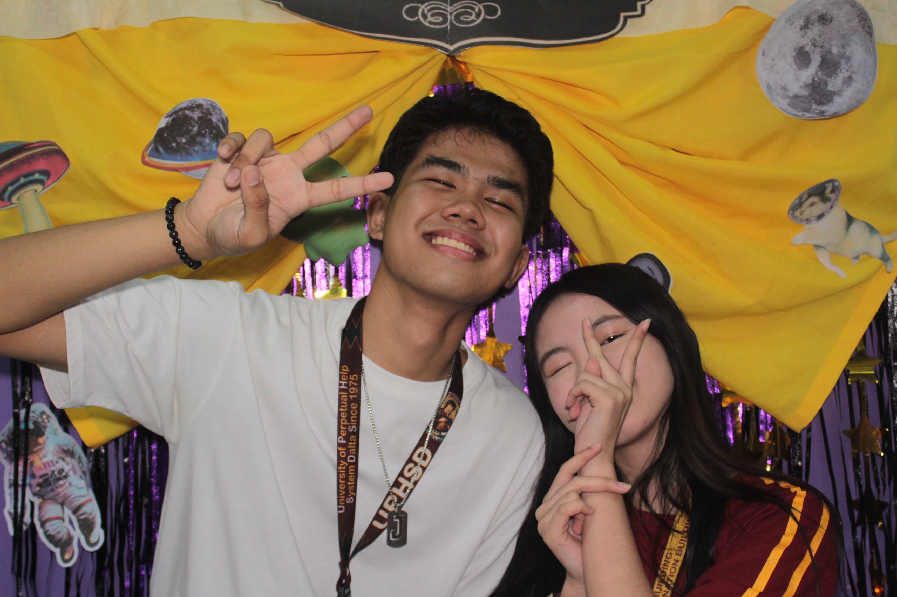
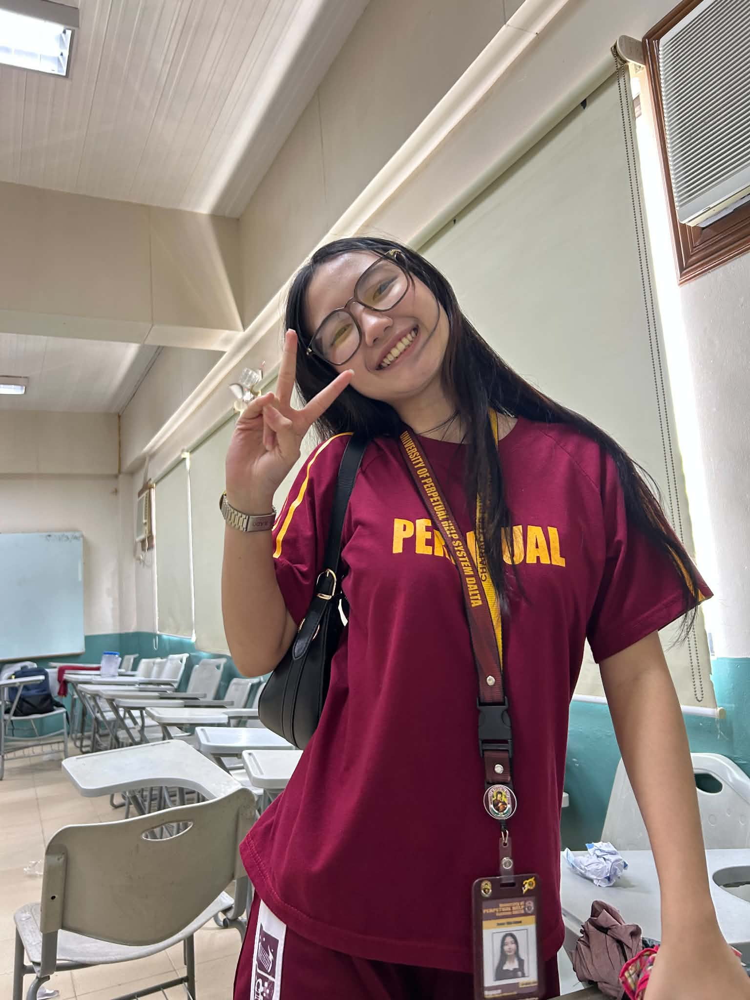
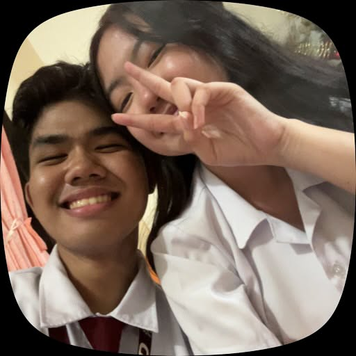

THE BEGINNING
2nd day of school
Hello Samsam, i still remember the day kung kelan kita unang beses nakita at nakilala. Naalala ko pa kung papaano ka ngumiti at ang mapungay mong mga mata.
I made this little corner of the internet for you.
No pressure, no expectations — just a few things I wanted to say.
made with love, just for you bebi
little pieces of us
Some moments may be small, but they meant a lot to me.



I love you
our little timeline
Edit these moments so they tell your real story.
THE BEGINNING
Hello Samsam, i still remember the day kung kelan kita unang beses nakita at nakilala. Naalala ko pa kung papaano ka ngumiti at ang mapungay mong mga mata.
A FAVORITE MEMORY
Naalala ko kung gaano ako kasaya nung araw na binigay mo sakin ang puting cutie na bear na keychain. Doon ko na realize na dapat pa ako mag patuloy at magtiwala satin dalawa na may patutunguhan ang lahat ng ito.
WHAT I'VE LEARNED
I'm sorry Sam if bigla akong tumigil at sumuko. I'm sorry if mas napangunahan ako ng takot at pangamba sa mga maaring mangyari ngunit nalimutan ko na hindi lahat ng tao ay pareho. Nalimutan ko ang tunay na kahulugan ng love at trust sa isang tao. Masyado ako nabulag sa mga bagay na naranasan ko sa akin nakaraan imbis na mas pahalagahan at mag tiwala. Alamkong iba ka sa kanila at hindi mo ipapadama sa akin ang bagay na naramdaman ko noon. Patawad kung masyado ako nag pakaduwag at pangako hindi na kita muling iiwanan sa ere.
from my heart
Hi, Bebi,
Nais ko sana simulan ito sa isang sorry dahil sa paglisan ko ng ganun ganon lang. Namimiss na kita sam and alam ko na hindi sapat para maayos muli lahat na nangyari Sana pinag isipan ko muna lahat ng desisyon ko bago pangunahan ng takot at pangamba sa mga maaring mangyari imbss na pinag sisihan ko ngayon yung desisyon ko nung gabing iyon.
I m sorry sam, if hindi ko nilawakan ang pag iisip ko nung mga oras na yon. Mas nauna ko naramdaman yung takot na muli ko maramdaman yung mga bagay na kinakatakutan ko. Hindi ko man lang binigyan ng pagkakataon ang bawat isa ng oras at panahon bago mag desisyon bagkus pinangunahan ko sa mga salitang binitawan ko kahit hindi ko kayang panindigan.
Patawarin mo sana ako kung hindi ko kaya manindigan sa kung ano ang desisyon ko. Kasi kahit ganoon naniniwala ako na marami pang pagkakataon at mga memories ang naghihintay sa atin. Namimiss na kita Sam lalo na at hindi kita matanaw ngayon. Namimiss ko na yung cute cuteee moooo na smile at mga tawanan. Sayo ko lang naramdaman muli ang tunay na saya na matagal ko na hinahanap. Nakakainis isipin dahil andito na yung bagay na yon pero mas pinili ko pa rin ito bitawan.
I hope that you re doing well right now, Sam. Kung may sapat ka na oras at panahaon ay sana makapag usap muli tayo. Hindi kita pinipilit dahil alam ko na mali ko naman. Pasensiya kung masyado ako nagiging mabilis sa mga bagay bagay. Sana’y nanatili pa rin ako riyan sa iyong puso at muli natin ayusin ang mga bagay na nasimulan natin.
Nauunawaan at naiintindihan ko kung ano man yung nararamdaman mo ngayon. Hindi mo kailangan sumagot sa ngayon dahil mas mahalaga ang sarili mo. If kailangan mo pa rin ng space, i’ll respect that.
May iba sana ako balak kung papaano ko ipapahayag sayo ang nararamdaman ko. Kaso narinig ko sa iba na aalis raw bukas ang pamilya ninyo patungo sa Maynila. Kung kaya mas pinili ko na lamang gumawa ng paraan thru online. Ayoko sayangin ang oras at panahon dahil ang totoo natatakot ako mawala ka. Magiingat kayo Samsam!!
Kung ano man ang mangyari patuloy kitang mamahalin Sam. Patawad kung d ko kaya manindigan sa nga desisyon ko. Wala ako intention na guluhin at gambalain ka. I hope na maging okay na rin sayo lahat pati sa family mo. You always have me, okay? i love you so much.
From pogi,
puroy ♡
Balik kana please? I'm sorry.
one honest question
I would love a chance to listen and talk about us, if that feels right for you. There's no pressure to say yes, and it's okay if you need time or don't want to.
Your answer stays on this page; it isn't sent to me automatically.